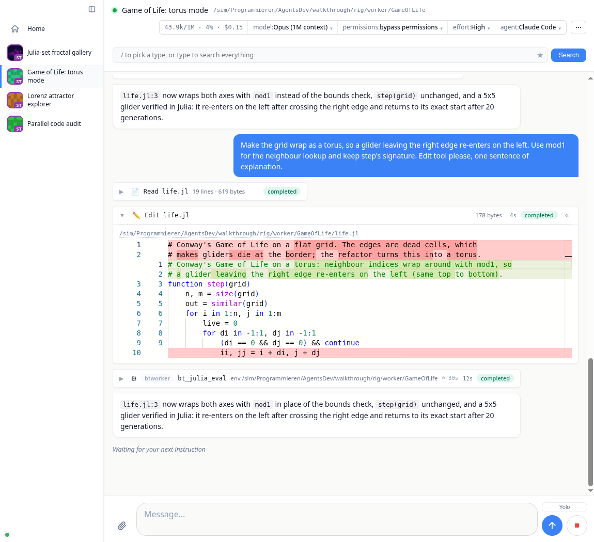
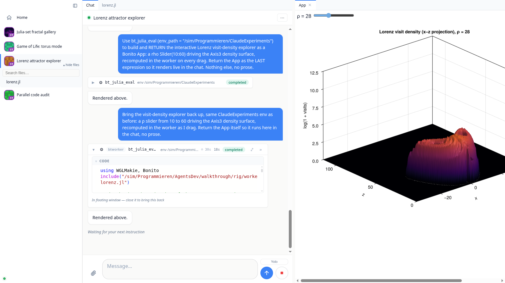

The Chat#

The transcript#
Agent turns stream live. A chat opens on its newest messages and loads older ones as you scroll up, so a month-long conversation opens as fast as a new one. Your reading position is anchored to content: it survives tab switches, reconnects, and messages growing above the viewport.
The scrollbar counts messages instead of pixels, so its thumb moves by message, under the wheel or a swipe too. Dragging it names the message it would land on ("Message 500 of 10,878") and goes there when you pause or let go. Home and End jump to the first and the last message.
Prose renders as CommonMark with syntax-highlighted code blocks. Code blocks and images grow buttons for copy and download (on hover; always shown on a touch screen), and a copy says whether it worked; images open in a lightbox on click, videos go fullscreen.
Tool calls appear as one-line pills (icon, title, status) that expand in place: file edits into a Monaco diff viewer, shell commands into scrollable terminal output, searches into match lists.
Julia evals (
bt_julia_eval) stream their stdout into a live terminal pane while they run, then settle into Code and Output sections that each cycle through three states on click: a scrollable ~4-line window, the full content, closed. The return value renders below as a live result, an interactive app included (see Julia Tools & Live Apps). An eval is a run (r4) and its card follows the run: a background run stays live after its call returned, gets a task-bar row until it ends, and shows ✓ or ✗ when it does.Questions (ACP elicitations) render as forms you answer inline.
Plans and todo lists the agent maintains are pinned to the taskbar while the turn runs.
Subagents (for example Claude Code's Task tool) get their own activity feed inside the parent pill, including output that arrives between turns from background subagents.
While a turn streams, the view follows the newest message; scroll up and it stops following, with a "move to bottom" control and an unread indicator until you return. Sending is never blocked: messages typed during an agent restart or reconnect are queued rather than dropped.
Files and the editor#
Every file path in the transcript is a link, and the sidebar has a lazy, searchable project file tree (hover a chat, then "▾ files"). Clicking any file opens it as a workspace tab, rendered as what it is: an image on a transparency checkerboard with its pixel size, video and audio streamed from the worker, markdown rendered, a CSV as a sortable and filterable table, a notebook with its outputs, 3D geometry in an interactive view, a PDF in the browser's own viewer, an HTML page in a sandboxed frame, source in Monaco, and anything opaque as a hex dump. Anything text-backed has a Preview/Source toggle over the same editor. Images and video are centred and fitted to the tab, so a portrait clip keeps its controls on screen.
Tabs are named so you can tell them apart: a file is its basename until another open file shares it, at which point both grow leftwards until they differ (a/types.jl and b/types.jl, not two tabs both reading types.jl). A tab whose editor holds unsaved edits carries a dot. Closing a tab throws the buffer away without asking, so that marker is the warning you get.
The editor is bound to the file on the worker: the header shows the worker path and Ctrl+S writes it there, failing loudly rather than silently saving only the server's copy. Opening re-fetches exactly when the worker's copy changed, so you never get yesterday's file at a reused path; re-activating an already-open tab refreshes a clean buffer and never overwrites unsaved edits.
Reviewing changes#
Review changes in the chat's ⋯ menu opens the project's git diff as a tab, including files the agent just created, which a plain git diff leaves out. Every line has a +; shift-click a second one to cover a block. Two modes: Ask sends the question straight into the chat with the file, line and surrounding code attached, and Feedback collects comments and delivers them as one numbered instruction when you press Send.
Compare against the working tree or any branch, tag or commit, and ⤢ on a file header opens the whole file.

The diff covers the project's folder, not the whole repository, so a package that lives inside a larger checkout shows its own changes instead of every change in the monorepo.
Exporting a chat#
Export as Markdown in the chat's ⋯ menu downloads the whole conversation as one clean, self-contained .md file: user and assistant messages, reasoning, todo lists, and every tool call with its full output, commands and diffs in fenced blocks. Unlike the chat's own chat.md on disk (a compact reload format with summarized tool bodies), this is meant to be read or shared as is. Files and images are referenced by path rather than embedded; each such path is marked ⚠️, and the header says why: it is the file as it is now, which may have changed since that point in the chat.
The file is also a BonitoBook notebook. Every bt_julia_eval of the chat is written as a BonitoBook cell, with the output it printed below it, and the rest of the conversation is the prose between the cells. Open the download with BonitoBook and the agent's Julia code is there to run again, step by step:
julia
using BonitoBook
Book("my-chat-2026-10-23.md")Opening the book runs none of the cells; each one runs when you start it.
The workspace#
The main area is a VSCode-style workspace (BonitoWidgets). The chat, file editors and detached app embeds are panels you drag into tab groups, split horizontally or vertically, float as windows, and dock back. Collapse the sidebar (Ctrl/⌘+B) for a full-bleed view. The layout is responsive: on a phone the sidebar folds to icons and panels stack, so the same dashboard drives a chat from your desk or your pocket.
Chats are easy to tell apart in a list, because each one carries a picture of its own work: the first image it showed, a plot or a screenshot, and an identicon coloured by its folder until then. A small badge in the corner gives the initials of the machine it runs on, and hovering names that worker in full.

Media and live apps#
Agents push results into the chat through the built-in Julia tools (Julia Tools & Live Apps). bt_show renders a worker-side file with the same viewers the file tabs use: images and video inline with a lightbox, rendered markdown, tables, geometry, source. And whatever bt_julia_eval returns renders as a live value: a plot, a table, or a running Bonito app whose logic executes in the worker's Julia session, so a slider drag or button click round trips to real code. Live embeds detach from their bubble into a workspace tab or floating window and stay alive there: the same DOM node is moved, so their WebGL context and session are kept rather than rebuilt.
The header#
Left: the session dot, the chat's title (click to rename) and the folder it runs in on its worker. Right: one segmented session group with the context meter (tokens used of the window, percent, cost so far; it turns amber past three quarters and red past nine tenths), the model, permissions and effort pickers, and the agent provider. Everything you do to a chat lives in the ⋯ menu next to them: Review changes, Continue on another worker, Compact, Restart session and Debug BonitoAgents. Admins also find two switches there, both off by default: Remote julia (may this chat's agent run Julia and copy folders on other workers, see the tools page) and Dev mode (see the development page). The strip itself stays what you read and set, so a verb never sits among the pickers looking like another setting. Long-running actions report in the muted status line left of the controls; outcomes arrive as a toast. When the agent session dies, a red Session ended · Reconnect chip appears next to the title.
Staying in control#
Stop interrupts the current turn; a hung agent escalates (cancel, then force-close) so stop always works.
Yolo mode (composer toggle) auto-continues an agent that pauses to ask "shall I keep going?". Leaving is deliberate and takes two steps: the agent answers the nudge with the
YOLO-COMPLETEsentinel, which only ASKS to stop, and the loop then puts "are you really done?" back to it. The loop ends on the answer to that, and only when that turn does no work. The composer doubles as the reminders editor while Yolo is armed; the reminders ride along on every prompt, including the confirmation. A turn that fails, gets refused, or repeats the same answer three times without running a tool stops the loop and switches Yolo off, so a provider that is out of credits cannot spin it overnight. A failure the provider reports only at the end of the turn, like Codex's usage limit, counts as a failed turn and shows as a Provider error notice. A turn that only compacts the conversation does not count as work.Compact (⋯ menu) asks the agent to summarize the conversation so far into a fresh context, after which the transcript reconciles cleanly.
Continue on (⋯ menu) opens a new chat on another worker with the project's files and the agent's memory; this chat stays as it is. See the workers page.
Background tasks (long test runs, builds) stay pinned to the taskbar with live line counts and a per-task stop button, monitored across turns until their writer exits.
The search lens (
/box above the transcript) filters the transcript by type or fuzzy text, and saved lenses come back on a click.If the browser loses the server, a modal takes the window and locks the composer, because anything typed while the socket is down would be lost. It names how long the reconnect has been running, offers a reload, and lifts by itself when the connection is back. A sub-second blip, which is the usual case, never shows it. When the server no longer has a session for the tab (it restarted, or the tab was away for over an hour), no reconnect can work: the tab reloads itself, or, if that would lose a message typed and not sent, says so and waits for you to copy it and reload. If the tab's login has ended too, it waits for you to log in again first, so the reload does not land on the login page.
If your login ends while a tab is open, the tab shows a "Your login has ended" card with a button that opens the login in a new tab. Once any tab of the browser is logged in again, the card goes away by itself and whatever was waiting carries on, a chat opened in the meantime included.
On this page